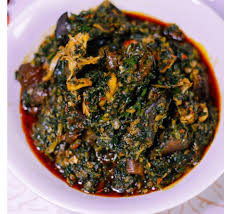
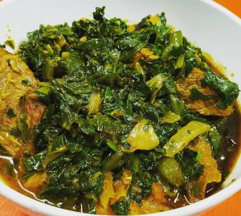
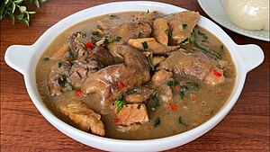
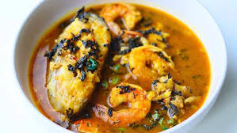
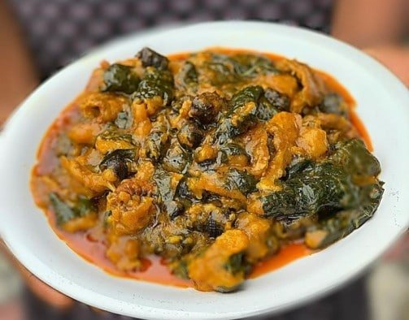
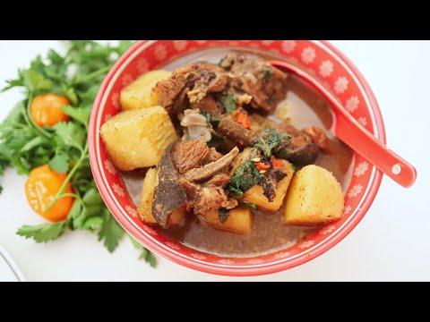

WELCOME TO THE HOME OF AMAZING RECIPES
NATIVE SOUPS
Afang Soup

Ingredients
Afang leaves, water leaves, meat, stockfish, dry fish, crayfish, palm oil, pepper, salt, perewinkle.Method of Preparation
step 1: Cook meat, stockfish, and dry fish with desired amount of seasoningstep 2: Add palm oil, crayfish into cooked protein and allow to cook for about 10mins
step 3: Add washed and sliced water leaves, simmer until well cooked.
step 4: Add grinded afang and cook for 3 minutes and turn off the heat
Edikaekong Soup

Ingredients
Ugu leaves, water leaves, beef or chicken, stockfish,fresh fish, dry fish, crayfish, onions, palm oil, pepper, saltMethod of Preparation
step 1: Cook meat, stockfish, and dry fish with desired amount of seasoningstep 2: Add palm oil, crayfish into cooked protein and allow to cook for about 10mins
step 3: Add washed and sliced water leaves, simmer until well cooked.
step 4: Add sliced ugu and cook for 3 minutes and turn off the heat
Atama Soup

Ingredients
Palm fruit extract, periwinkle, beef or chicken, stockfish,fresh fish, dry fish, crayfish, onions, palm oil, pepper, saltMethod of Preparation
step 1: Cook meat, stockfish, and dry fish with desired amount of seasoningstep 2: Add palm oil extraxt, atama spices, crayfish into cooked protein and allow to cook for about 15-20mins until it thickens
step 3: Add sliced atama leaves and cook for 3 minutes and turn off the heat
Afia Efere

Ingredients
Catfish, chicken, periwinkle, kponmo, cocoyam, water leaves, uziza leaves, stockfish,fresh fish, dry fish, crayfish, onions, palm oil, pepper, saltMethod of Preparation
step 1: Cook meat, chicken, catfish,stockfish, and dry fish with desired amount of seasoningstep 2: Add palm a little amount of palm oil, crayfish into cooked protein and allow to cook for about 10mins
step 3: Add more water to desired amount and put in blended cocoyam into the boiling mixture, simmer until well thickened.
step 4: Add water leaves, palm oil, uziza leaves, crayfish, pepper, and salt and cook for 3 minutes and turn off the heat
Fisherman Soup

Ingredients
Fresh fish, periwinkle, prawns, beef or chicken, stockfish, dry fish, crayfish, onions, palm oil, pepper, saltMethod of Preparation
step 1: Cook meat, Fresh fish, periwinkle, prawns, beef or chicken, stockfish, and dry fish with desired amount of seasoningstep 2: Add palm oil ,seasoning, crayfish into cooked protein and allow to cook for about 15-20mins until it thickens
step 3: Add sliced scent leaves and cook for 3 minutes and turn off the heat
SPECIAL DISHES FOR OCASSIONS
Ekpang Nkukwo

Ingredients
Cocoyam, water yam, three leaf yam, periwinkle, stock fish meat, crayfish, pepper, salt, palm oil.Method of Preparation
step 1: Cook meat, stockfish, and dry fish with desired amount of seasoningstep 2: Grate cocoyam, three leaf yam and water yam. Cook grated cocoyam in wrapped leaves. then place one after the other into the pot with cut and washed perewinkle at the bottom
step 3: Add boiling water, crayfish and all the protein into the pot, with the cocoyam cook for 3 minutes and turn off the heat
step 4: Add sliced ugu leaf to boiling yam mixture and bring to a boil.
Yam Porridge

Ingredients
Yam, fresh fish, ugu leaf, scentleaf, crayfish, pepper, kpomo, stockfish, onions, palm oil, salt.Method of Preparation
step 1: steam Fresh fish, stockfish, and onions with desired amount of seasoningstep 2: Boil yam until soft. Add fresh fish, crayfish, pepper,leaves, onions, palm oil, and salt. Simmer until well cooked
Peppersoup Yam

Ingredients
Yam, goat meat, scentleaf, crayfish,peppersoup spice, pepper, stockfish, onions, salt.Method of Preparation
step 1: steam goat meat, stockfish, and onions with desired amount of seasoningstep 2: Put chopped yam cubes into the steamed meat, add desired amout of water and cook till soft
Step 3: Add crayfish, pepper,scent leaves, onions, and salt. Simmer until well cooked and turn off heat